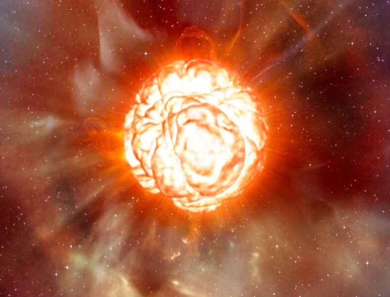

How Soon Will Betelgeuse Blow?
by: Monica Young

If astronomers had to guess the next, nearby star to go supernova in the Milky Way, their bets might go to Betelgeuse. The bright-red supergiant star that marks Orion’s shoulder is nearing the end of its life, and it’s less than 1,000 light-years from Earth. But how close is it to going supernova? And will we be around to see it?
Typically, astronomers suggest it might explode within the next 100,000 years — that is, “soon” on a cosmic timeframe, not a human one. But a new study posted June 1st on the arXiv has been making the rounds, in which Hideyuki Saio (Tohoku University, Japan) and colleagues claim that the star might be further along in its evolution, and that much closer to exploding, than we thought. However, others are taking issue with that result.
The claim comes down to the star’s pulsations. Betelgeuse is unstable, “breathing” in and out regularly, with overlapping overtones. Following its brightness over the past century (thanks in part to data from the American Association for Variable Star Observers), astronomers have noted changes over periods of 2,200 days, 420 days, 230 days, and 185 days.
Usually, astronomers treat the 420-day up-and-down as the primary in-and-out pulsation, with the shorter cycles as overtones. The 2,200-day (or 6-year) period isn’t generally considered part of these ins and outs, and is instead dubbed a long secondary period, a feature of unknown origin common to one-third of supergiant stars.
If the 420-day period is the primary one, then Betelgeuse would have the diameter of 800 to 900 Suns lined up in a row. Placed in the solar system, it would almost reach the orbit of Jupiter. Saio and colleagues, however, think that might be an underestimate. If the 2,200-day cycle is the primary one, and all the rest are overtones, then the star would be even more supergiant, spanning 1,200 Suns — even wider than Jupiter’s orbit.
In line with its larger size, the star would be even further along in its lifecycle. Stars like Betelgeuse live fast and large. Like the Sun, they first light up by fusing hydrogen into helium within their cores, but they quickly move on to helium, fusing it into carbon. Carbon then burns to make other, heavier elements. Around the core, lighter elements burn in shells, causing the star to billow outward like a hot plasma balloon.
Saio and his colleagues use computer simulations to watch stars evolve from birth to old age, then they calculate the pulsations they ought to see at each stage. They find that all four pulsations — from the 2,200-day cycle through the 185-day cycle — can be explained by a “breathing” star in the late stages of carbon-burning. “After carbon is exhausted in the core, a core-collapse leading to a supernova explosion is expected in a few tens years,” the researchers write.
But when will the carbon run out? It’s hard to tell because the pulsation periods don’t change much at this late stage. “It’s not possible to exactly estimate how much carbon is left in the core at present,” Saio says. “We just guess the time to the carbon exhaustion is probably less than a few hundred years.”
So, to put some headlines in perspective, Saio’s group isn’t saying Betelgeuse will blow tomorrow or even in the next decade. The researchers’ claim is that Betelgeuse would blow within 1,000 years rather than 10,000 or 100,000.